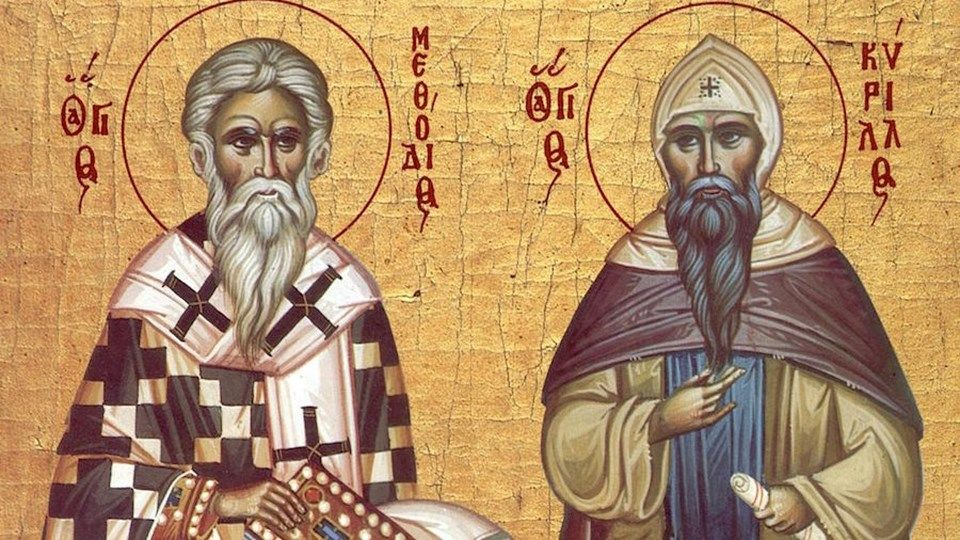

24 Май
Ден на светите братя Кирил и Методий, на българската азбука, просвета и култура и на славянската книжовност

Ден на светите братя Кирил и Методий, на българската азбука, просвета и култура и на славянската книжовност е български официален празник, честван на 24 май. На този ден в България се чества делото на славянските просветители Кирил и Методий и българската просвета и култура, включително и създаването на кирилицата в Преславската книжовна школа.